Models & Tools
Our lab combines bioinformatics with wet-lab experiments.
Working in cell and mouse models, we generate single-cell, spatial and long-read data in our own lab and add protein and metabolite measurements through collaborations. We analyze them mainly with established public packages, writing our own code where needed.
FiNi-seq · Data we generate · Models · Functional assays · Computation
Signature method FiNi-seq: Fibrotic Niche Enrichment Sequencing
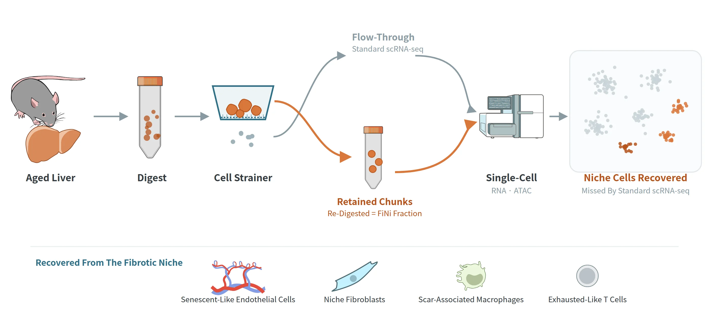
How it works
Aged and fibrotic tissue resists enzymatic dissociation, so its niche cells stay on the cell strainer and are discarded in standard single-cell workflows. FiNi-seq collects these undissociated chunks, digests them again and profiles them by single-cell RNA and ATAC sequencing. In the aged mouse liver it recovers senescent-like endothelial cells, niche fibroblasts, scar-associated macrophages and exhausted-like T cells that standard scRNA-seq misses.
Key paper
Data layers Data we generate
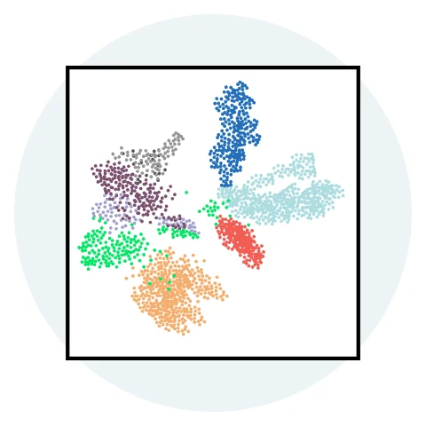
Single-cell & single-nucleus
RNA · Chromatin In-house
scRNA-seq, snRNA-seq and scATAC-seq on 10x Genomics Chromium, and single-cell combinatorial indexing (sci) for scalable profiling.
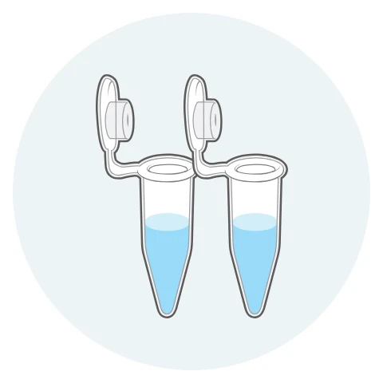
Bulk sequencing
RNA · Chromatin In-house
Bulk RNA-seq and ATAC-seq, sequenced on Illumina NovaSeq.
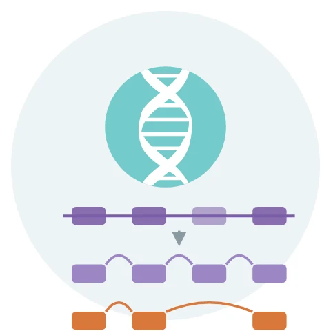
Long-read sequencing
RNA isoforms In-house
Nanopore long-read sequencing (P2 Solo) to resolve RNA isoforms and alternative splicing, and genome structural variants.
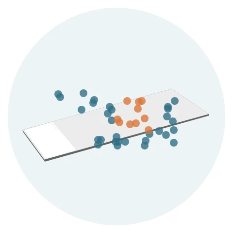
Spatial transcriptomics · Xenium
Space In-house
10x Genomics Xenium in situ imaging to place cell states in their tissue niche.
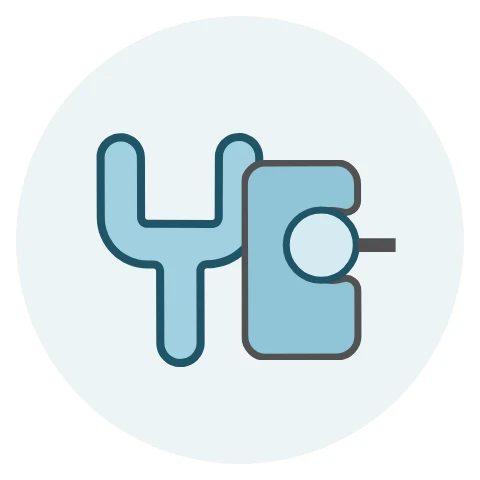
Proteomics
Protein Collaboration
Mass-spectrometry proteomics (LC-MS/MS) of tissues and niche fractions.
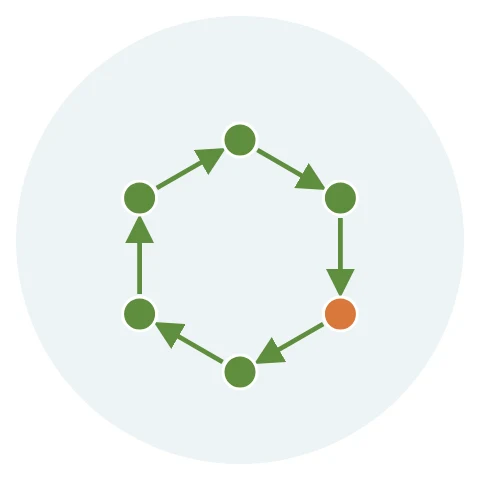
Metabolomics
Collaboration
Metabolite profiling to follow metabolic rewiring with age.
Model systems Models
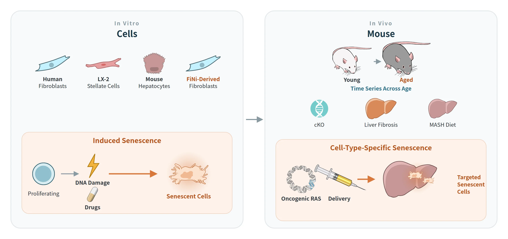
Cells
- Human fibroblasts, LX-2 human hepatic stellate cells, primary mouse hepatocytes, and fibroblasts grown from FiNi-seq chunks
- Senescence induced in vitro by DNA damage or drugs
Mouse
- Young and aged mice across age
- Conditional knockout (cKO) mice
- MASH diet and liver fibrosis models
- Oncogenic RAS delivery to induce cell-type-specific senescence
Perturb & validate Functional assays
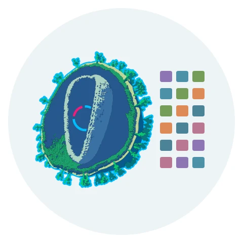
Genetic screening
CRISPR, CRISPRa and ORFeome screens to find factors that set or reverse the senescence fate.
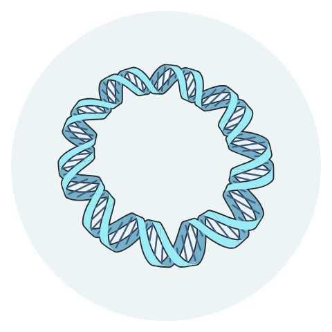
Molecular tools
Cloning and lentiviral vectors to perturb and track genes.
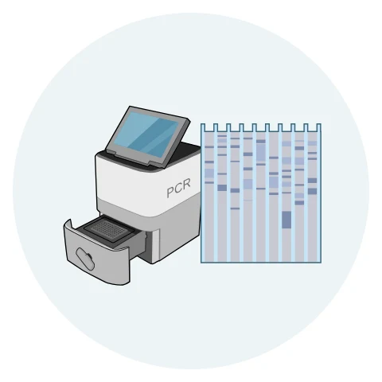
Molecular assays
Real-time PCR and Western blot to measure gene and protein expression.
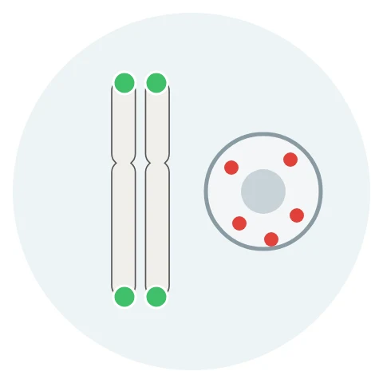
Tissue validation
Histology and immunofluorescence, RNA FISH (e.g. RNAscope) and telomere FISH to confirm cell states in tissue.
Analysis Computation
We analyze bulk, single-cell, spatial and long-read data in R and Python on in-house Ubuntu servers, using RStudio Server and Docker for reproducible environments, and reanalyze public aging atlases. We write our own code and tools where needed, with AI-assisted programming.
Key papers
- GDBr: genomic signature interpretation tool for DNA double-strand break repair mechanisms
Ryu et al., Nucleic Acids Research, 2025 - A beginner’s guide to assembling a draft genome and analyzing structural variants with long-read sequencing technologies
Kim et al., STAR Protocols, 2022
Illustrations adapted from the NIAID NIH BIOART Source (public domain).